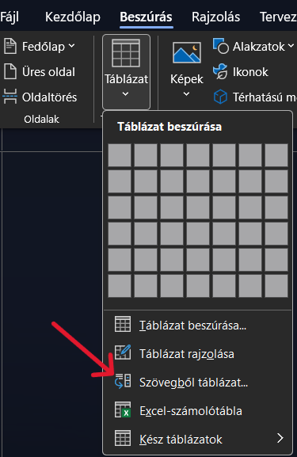
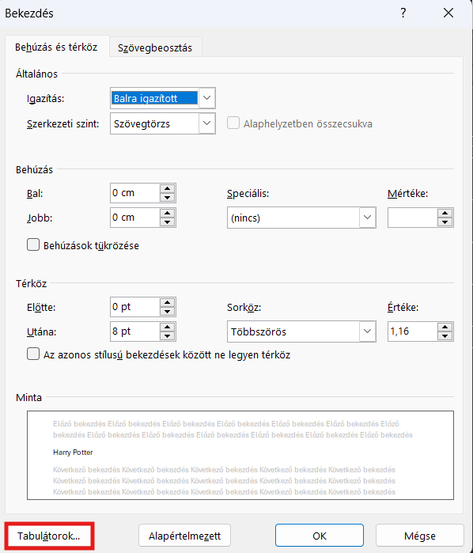
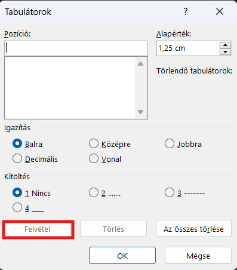
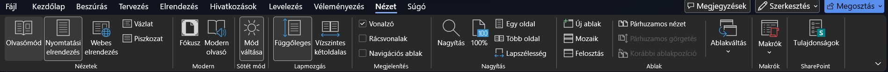

Ebben a dokumentumban egy új dolgot tanulunk meg. A szövegeket nagyon hatékonyan tudjuk tabulátorok segítségével rendezni. Ezek a karakterek hasonlítanak a szóközre abban, hogy ugyanúgy helyet hagynak ki az egyes részek közt. Van viszont fontos különbség is, amit az óra végére – reményeim szerint – te is érteni fogsz.
Filmklub szavazólap
Az iskolai filmklub következő alkalmán a lenti filmek közül szeretnénk kiválasztani a megnézendő alkotást. Az információkat a szöveg alatt találod, 1-10-ig pedig a lap legalján tudod pontozni az alkotásokat aszerint, hogy melyiket mennyire szívesen néznéd meg.
Film címe Rendező Megjelenés (év) Hossz (perc)
Harry Potter és a bölcsek köve Chris Columbus 2001 152
Bosszúállók Anthony Russo, Joe Russo 2019 181
Jégvarázs Chris Buck, Jennifer Lee 2013 102
Pókember: Nincs hazaút Jon Watts 2021 148
Minyonok Kyle Balda 2015 91
Harry Potter
Bosszúállók
Jégvarázs
Pókember
Minyonok
Köszönjük a részvételt!
szervezők
1. Dokumentum készítése, szöveg bemásolása, mentés
Önálló feladat (haladóknak)
Nyisd meg a Wordöt, másold le a fenti szöveget, és illeszd be egy üres dokumentumba! Mentsd a fájlt a saját meghajtódra Filmklub saját neved.docx néven!
Részletes leírás (lépésenként)
A szöveg másolása: a szövegdoboz jobb felső részén levő Szöveg másolása gombra kattintva másold le a teljes szöveget!
Új dokumentum létrehozása: nyisd meg a Wordöt (), nyiss meg egy új üres dokumentumot!
A kimásolt szöveg beillesztése: illeszd be a kimásolt szöveget a vágólapról a ctrl + v billentyűkombinációval!
Mentés: mentsd el a dokumentumot: nyomd meg a ctrl + s billentyűkombinációt, kattints a Tallózás gombra! A felugró párbeszédablakban keresd meg a saját meghajtódat, a fájlnévhez pedig írd be, hogy Filmklub saját neved!
Ha otthon csinálod a feladatot, akkor természetesen ne keresd a saját meghajtódat, ahogy az iskolában! 😊
2. Cím és törzsszöveg formázása
Önálló feladat (haladóknak)
A teljes dokumentumban alkalmazz Garamond betűtípust, 14-es betűméretet, minden bekezdés legyen sorkizárt, és kapcsold be a teljes dokumentumban az automatikus elválasztást! A címet igazítsd középre, és ez legyen 20 pontos betűmérettel, továbbá valamilyen más színnel!
Részletes leírás (lépésenként)
Egységes formázások beállítása: jelöld ki a teljes szöveget! Ezt megteheted pl. a ctrl + a billentyűkombinációval. Alkalmazd a következő beállításokat:
Garamond betűtípus,
14 pontos betűméret,
sorkizárt igazítás.
Automatikus elválasztás beállítása: kapcsold be az automatikus elválasztást! Ezt az Elrendezés fülön találod, az Elválasztás résznél:
A cím formázása: jelöld ki csak az első sort, amely a címet tartalmazza, és állítsd itt be, hogy a bekezdés középre legyen igazítva, valamint válassz egy másik betűszínt ehhez a részhez!
3. Táblázat létrehozása a filmek adataiból
Önálló feladat (haladóknak)
A Film címe résztől a Minyonokat tartalmazó sorig jelölj ki mindent, és a Beszúrás fülön található Táblázat rész Szövegből táblázat parancsa segítségével alakítsd táblázattá! Formázd a táblázatot egy tetszőleges, előre beállított stílussal!
Részletes leírás (lépésenként)
Jelöld ki a Film címe sortól a Minyonok soráig a filmek adatait (és a fejlécet is)! A Beszúrás fülön kattints a Táblázat menüre, majd a Szövegből táblázat... lehetőségre!

A beállításoknál most nem kell változtatnod semmit, de ellenőrizd, hogy a tabulátor van-e kiválasztva! Ha igen, a program automatikusan kiszámolja, hogy hány sort és hány oszlopot kell létrehoznia a kijelölésből. Kattints az okéra, és készen van a táblázatod!
A táblázat formázása: az újonnan megjelenő Táblázattervezés fülön találsz előre elkészített stílusokat. Ezek közül válassz egy szimpatikusat, és formázd ilyenre a táblázatot! Itt a lefelé mutató nyilakkal tudod megjeleníteni a nem látszódó stílusokat.
4. Pontozás formázása (és pontszámok)
Önálló feladat (haladóknak)
Minden filmre adsz valahány pontot. Ehhez azokban a sorokban, ahol csak a (rövidített) filmcamek vannak, előbb minden cím után írj be egy tabulátort, majd pedig jelöld ki ezt a szakaszt, és állítsd be, hogy 10 cm-nél legyen egy balra igazított, ponttal kitöltött tabulátor! A tabulátor után írd be az általad gondolt pontszámokat mindegyik filmhez!
Részletes leírás (lépésenként)
Tabulátorok beírása: minden filmcím után írj egy tabulátort! Ezt a bal oldalon, a 0 és a Caps Lock közti gombbal tudod megtenni. Ezen a gombon lehet Tab felirat, de van, hogy két, egymással ellentétes irányba mutató, egy-egy vonalig tartó nyíl van rajta.
A dokumentumban van egy előre beállított, láthatatan rács, ennek a következő pontjához ugrik mindig a tabulátor gomb. Ugyanez nem csak a dokumentumokban működik, hanem pl. a párbeszédablakokban vagy az interneten is. Itt is, ha megnyomod, a következő olyan részre ugrik a kijelölés, ahol lehet valamit csinálni, pl. beírni valamit vagy kattintani valamire. Amikor bejelentkezel a gépre, a felhasználónév beírása után próbáld ki, hogy nem kattintasz a jelszó beírására szolgáló területre, hanem megnyomod a Tab gombot!
A szöveg kijelölése: fontos, hogy a tabulátorok most következő beállításai mindig csak ott érvényesek, ahol megadjuk őket. Ha tehát több sorban is szeretném alkalmazni ugyanazt a beállítást, akkor fontos, hogy kijelöljem ezeket a sorokat. Jelöld most ki azokat a sorokat, ahova az előző lépésben tabulátorokat írtál!
Tabulátorok párbeszédablak megnyitása: a Kezdőlap fülön keresd meg a Bekezdés szót! Ezzel egy vonalban, tőle jobbra van egy ilyen ikon, amellyel egy párbeszédablakot nyithatsz meg. Kattints erre! A párbeszédablak alján találsz egy Tabulátorok... gombot. Kattints erre!

Tabulátorok beállítása: a megjelenő párbeszédablakban adhatsz hozzá, törölhetsz és módosíthatsz tabulátorokat. Nagyon fontos, hogy minden hozzáadás vagy módosítás csak akkor érvényes, ha a Felvétel gombra kattintasz.
Adj hozzá egy tabulátort 10 cm-hez: ehhez írd be a fenti részbe, hogy 10; a mértékegységet kivételessen elhagyhatod, de nem okoz hibát, ha "10 cm"-t írsz.
A Kitöltés résznél válaszd ki a 2 ....... opciót!
Kattints a Felvétel gombra! A beírt pozíció alatt meg kell jelennie, hogy "10 cm".
Kattints az OK gombra, ezzel bezárod a párbeszédablakot.
Írd be a pontszámokat minden filmhez, ahogy gondolod!

5. Aláírás sor formázása
Önálló feladat (haladóknak)
A "szervezők" résznél szokás aláírni az ilyen meghívókat. Ez úgy néz ki igazán elegánsan, ha jobbra igazítjuk úgy, hogy fölé egy pontozott vonalat teszünk az aláírásnak. Igazán akkor jó, ha az aláírás alatti szöveg (itt most a "szervezők" szó) pontosan a pontozott vonal közepe alatt van. Állítsd be, hogy a "szervezők" szó 12 cm-hez legyen középre igazítva, a fölötte levő sorban (itt nyugodtan nyithatsz egy üres sort a köszönet után) pedig állíts be 9–15 cm közé pontozott vonalas kitöltést. Használd a tabulátorok beállításait!
Részletes leírás (lépésenként)
A feladat átgondolása, elmélet: itt kivételesen már gondolkodni is kell! Mivel azt szeretném, hogy a lap jobb szélén legyen a "szervezők" írás, és fölötte legyen egy pontozott vonal az aláírásnak, ehhez számolni kell. A "szervezők" szövegnek pontosan a pontozás közepe alatt kell lennie. Ilyenkor segít a vonalzó. Ha ezt nem látod, akkor kattints a Nézet fülre, és itt keresd meg a Megjelenítés kategóriában a Vonalzó melletti kis jelölőnégyzetet! Tegyél pipát bele, és máris látni fogod a vonalzót.
A jobb oldalon, de ne nagyon a szélén, mondjuk 9 és 15 cm között lehetne a pontozott vonal az aláíráshoz. Ha ide kerül, akkor ennek a közepéhez kell tenni a szöveget. Ennek a kettőnek a közepe pont a számtani közép: (9 + 15) / 2 cm = 24 / 2 cm = 12 cm. A szöveg közepe tehát 12 cm-hez kerül.

A pontozott vonal elkészítése: a köszönetnyilvánítás alatt érdemes egy üres sort nyitni, ahová az aláírás számára a pontozás kerül. Mivel most csak egy sorban lesz érvényes ez a tabulátorbeállítás, nem kell kijelölni, de az nagyon fontos, hogy a kurzor ebben a sorban villogjon.
Kattints megint a Kezdőlap fülön a Bekezdés kategória jobb oldalán levő kis nyílra, hogy megnyisd a párbeszédablakot! Nyisd meg a Tabulátorok párbeszédablakot is! Ebbe a sorba két tabulátor kell: oda, ahonnan, és oda, ameddig tart a pontozott vonal. Írd be a 9 és a 15 cm-eset is, és mind a kettőnél nyomd meg a Felvétel gombot is! Ha nem tudod, milyen beállítások kellenek pontosan, akkor kattints ide! Okézd le a párbeszédablakot! Ha nem tudod, mi hiányzik ahhoz, hogy lásd is a pontozott vonalat, kattints ide!
Az első tabulátor beállításai: Pozíció: 9 cm; Igazítás: mindegy!; Kitöltés: 1 Nincs; Felvétel A második tabuláror beállításai: Pozíció: 15 cm; Igazítás: mindegy!; Kitöltés: 2 .......; Felvétel OK
Emlékszel? A tabulátorral a dolkumentum láthatatlan rácsában ugrunk a következő ponthoz. Most annyi történt, hogy módosítottuk a rácsot, hozzáadtunk néhány plusz pontot, amelyekhez különleges tulajdonságot is rendeltünk (legalábbis a másodikhoz). Ahhoz, hogy ez meg is jelenjen, be kell szúnri a tabulátor karaktert. Az elsővel az első ponthoz ugrunk, 9 cm-re. A másodikkal válik láthatóvá az egész, amikor 9-től 15 cm-ig úgy jutunk el, hogy ki is töltjük a helyet.
A "szervezők" szó elhelyezése: vidd a kurzort a "szervezők" szó sorába (vagy jelöld ki ezt a sort)! Fontos, hogy az eggyel feljebb levőt NE jelöld ki! Nyisd meg a Tabulátorok... párbeszédablakot! Írd be a szükséges adatokat, vedd fel a tabulátort, majd zárd be a párbeszédablakot az OK gombbal! Sikerült a jobb oldalra vinni a szöveget? Ha nem, kattints!
Pozíció: 12 cm; Igazítás: Középre; Kitöltés: 1 Nincs
 ), nyiss meg egy új üres dokumentumot!
), nyiss meg egy új üres dokumentumot!


 ikon, amellyel egy párbeszédablakot nyithatsz meg. Kattints erre!
ikon, amellyel egy párbeszédablakot nyithatsz meg. Kattints erre!